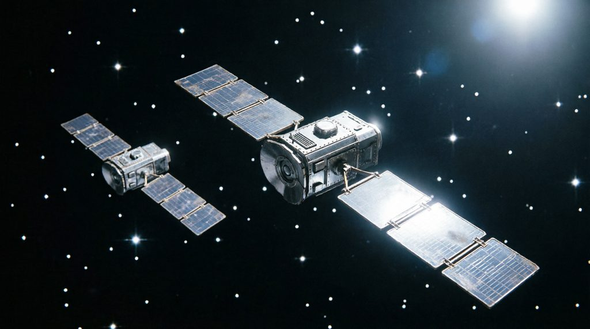
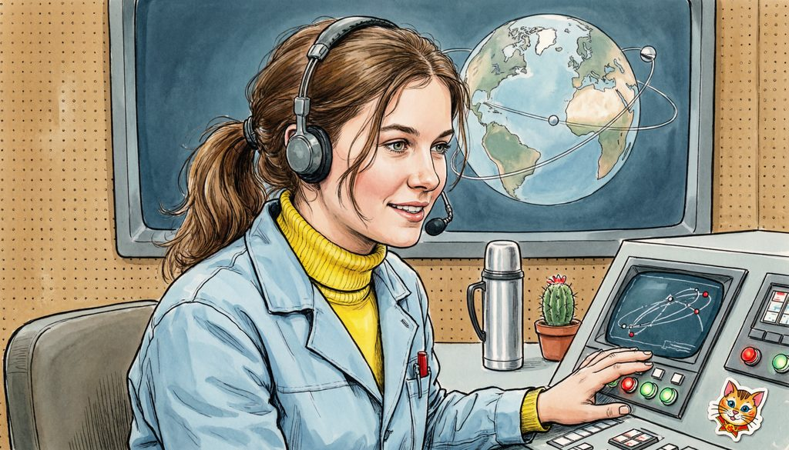

обрывки телеметрии
протокол финиша
Теперь — сам, без подсказок: на настоящем туре подсказывать будет некому. Это тренировка именно такого режима.
Как поступим, стажёр?

Оба протокола сошлись с телеметрией — Алиса довольна.
Метод Алисы: готовый протокол проверяется просто — подставь его в каждую фразу телеметрии. Сошлось во всех трёх — протокол верный. На настоящем туре это твоя страховка от обидных потерь.
Следующая миссия — КБ «Вега»: Григорий раскладывает чертежи.
Продолжение аттестации — в следующей миссии.